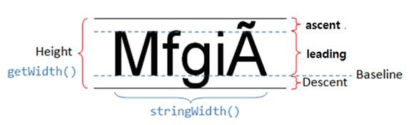

Java.awt..FontMetrics 클래스를 통해 글꼴 크기와 관련된 여러 정보를 얻을 수 있다
글꼴 크기 정보로 ascent, descent, leading, height등이 있다
문자열이 표시될 때 모든 문자열 수평 기준선(baseline)에 맞추어 표시된다
Asecent는 기준선 위로 확장되는 픽셀 수 이고
Descent 는 기준선 아래로 확장되는 픽셀 수 이다
Leading 은 descent 의 위쪽기준선과 ascent의 아래쪽 기준선의 사이의 픽셀 수 이다
Height는 ascent, descent, leading의 합계이다